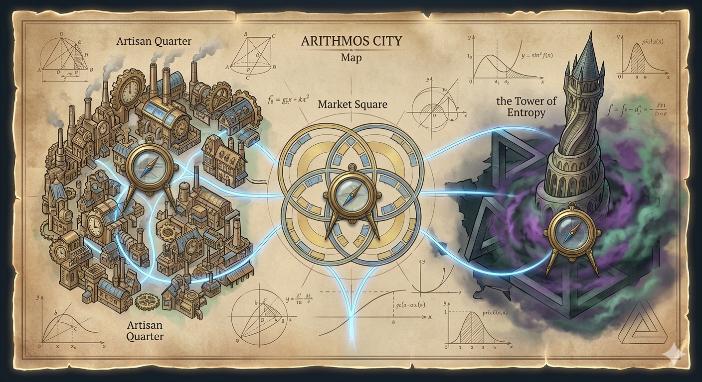

Звук:
Тема: ........
Цялостната история: „Пазителите на Шанса: Аритмос в Хаос“ Някога градът Аритмос бил върховният символ на съвършен ред — свят, в който всичко се подчинявало на логиката, а случайността нямала власт. Източникът на този баланс бил древният Кристал на Шанса — артефакт с невъобразима сила, който управлявал вероятностите и поддържал хармонията във вселената. Но един ден настъпил хаос. Злият гений Ентропия, въплъщение на безредицата, разбил Кристала на три части и ги скрил в различни части на града. В същия миг Аритмос започнал да се разпада: предмети се появяват и изчезват на случаен принцип, решенията стават невъзможни, а самата реалност започва да се подчинява на хаоса. Дори изгревът на слънцето вече не е сигурен. Ти влизаш в ролята на Арит — млад чирак в Академията по логика, един от малкото, които все още разбират законите на математиката. Твоята мисия е да преминеш през трите разрушени района на Аритмос, да решиш коварните математически изпитания на Ентропия и да възстановиш Кристала на Шанса. Само така редът може да бъде върнат. История по нива (сюжет и задачи) Ниво 1: Кварталът на занаятчиите (8. клас – Комбинаторика) Сюжет: Попадаш в квартал, обхванат от пълна бъркотия. Инструменти се разместват, изчезват и се появяват без ред. Занаятчиите са безпомощни и не могат да създадат нищо. Какво прави Арит: Той възстановява реда чрез комбинаториката — подрежда инструментите (пермутации), създава кодове за заключване (вариации) и формира работни екипи (комбинации). Край на нивото: Арит намира първото парче от Кристала, което му дава способността да подрежда хаоса. Ниво 2: Площадът на пазарите (9. клас – Класическа вероятност) Сюжет: Търговията е в колапс. Никой не знае какво продава, какво ще получи или какъв е шансът да спечели. Какво прави Арит: Той разчита повредени таблици и диаграми, за да разбере наличностите, изчислява шансовете за успех (класическа вероятност) и анализира различни възможни изходи при сложни ситуации. Край на нивото: Арит намира второто парче, което му дава способността да предвижда възможните изходи. Ниво 3: Кулата на Ентропия (11. клас – Вероятности) Сюжет: Арит достига до кулата на Ентропия, където реалността е нестабилна. Капани се активират непредсказуемо, а пространството се изкривява. Какво прави Арит: За да оцелее, той използва условна вероятност, за да предвижда събития, прилага формулата на Бейс, за да открива скрити зависимости, използва схема на Бернули за поредици от опити и решава задачи с геометрична вероятност, за да намира точни позиции в пространството. Край на играта: Арит побеждава Ентропия, сглобява Кристала на Шанса и възстановява реда в Аритмос. Градът отново се превръща в символ на логиката и хармонията.

.......